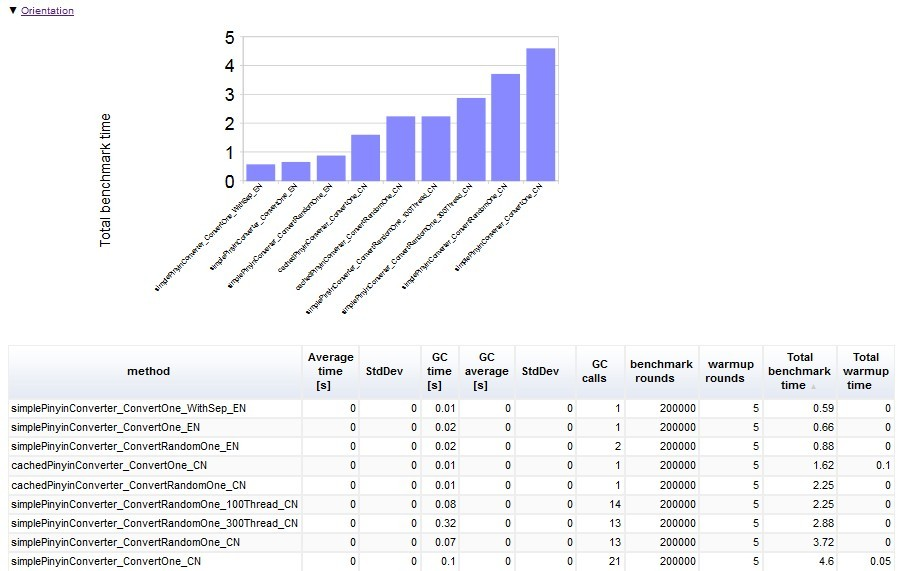

大家知道单元测试对代码质量的保障作用已经没什么可说的了。Microbenchmark（微基准测试）也是保证代码质量的重要手段，也是容易忽略的，它用来衡量一些小的代码片段的性能指标，完善的Microbenchmark可以便于定位出一些性能瓶颈,它类似于单元测试,能够进行持续集成,当代码有改动时能够通过持续集成的历史数据 看出对性能的影响点。
之前使用Google的Caliper，但目前还在重度开发中，每个版本API变化比较大，还有好些地方不够稳定，所以暂时放弃使用。
这里先重点介绍一下JUnitBenchmark的实践，它使用简单，有直观的图表。
添加依赖：
<dependency>
<groupId>com.carrotsearch</groupId>
<artifactId>junit-benchmarks</artifactId>
<scope>test</scope>
<version>0.7.0</version>
</dependency>
@BenchmarkMethodChart(filePrefix = "target/PinyinConvertersBenchmark") //指定报表的路径和文件名前缀
@BenchmarkHistoryChart(filePrefix = "target/PinyinConvertersBenchmark-history", labelWith = LabelType.CUSTOM_KEY, maxRuns = 20) //设置历史数据报表参数
public class PinyinConvertersBenchmark extends AbstractBenchmark {
final static Random random = new Random();
final static HanyuPinyinOutputFormat hanyuPinyinOutputFormat = SimplePinyinConverter.getInstance()
.getDefaultPinyinFormat()
.getPinyin4jOutputFormat();
@AfterClass
public static void after() {
CachedPinyinConverter cachedPinyinConverter = (CachedPinyinConverter) PinyinConverterFactory.CACHED_DEFAULT.get();
cachedPinyinConverter.dumpCacheInfo(System.out);
CachedConvertAccess.clear(cachedPinyinConverter);
}
//总共运行20w次+5次热身
@Test
@BenchmarkOptions(benchmarkRounds = 200000, warmupRounds = 5, clock = Clock.NANO_TIME)
public void pinyinConverters_ConvertOneStr_CN() throws ConverterException {
PinyinConverters.toPinyin("我们对发动过", "");
}
@Test
@BenchmarkOptions(benchmarkRounds = 200000, warmupRounds = 5, clock = Clock.NANO_TIME)
public void pinyin4j_ConvertOneStr_CN() throws BadHanyuPinyinOutputFormatCombination {
PinyinHelper.toHanyuPinyinString("我们对发动过", hanyuPinyinOutputFormat, "");
}
//100个线程运行
@Test
@BenchmarkOptions(benchmarkRounds = 200000, warmupRounds = 5, concurrency = 100, clock = Clock.NANO_TIME)
public void testPutOne_100Thread_CN() {
testPutOne_OneThread_CN();
}
}
然后作为普通单元测试运行就可以了。
如果需要生产报表,
1. 要添加jvm参数运行，-Djub.consumers=CONSOLE,H2 -Djub.db.file=./target/.benchmarks
jub.db.file路径自己定义。
2. 还需要添加H2的依赖:
<dependency>
<groupId>com.h2database</groupId>
<artifactId>h2</artifactId>
<version>1.3.170</version>
<scope>test</scope>
</dependency>
运行后在指定的报表目录下可以找到类似的html报表，对比了总次数、耗时、每个方法的运行时间、gc次数和耗时等数据：

JUnitBenchmark也存在一些不足，报表和功能还不够丰富，只能做一些简单的微基准；使用并发测试时（例如设置concurrency = 100）经常会出现失败,已经反馈了bug,作者表示会尽快修复；
目前还没有现成的jenkins集成插件。但是JUnitBenchmark还只是alpha阶段，做到这样已经不错了。
以下记录一些Microbenchmark框架，不作详细介绍，有兴趣的慢慢去研究选择适合自己的。
ORACLE出品
http://assylias.wordpress.com/2013/05/06/java-micro-benchmark-with-jmh-and-netbeans/
https://github.com/nitsanw/jmh-samples
需要xml配置，初看配置有点复杂，但图表完善。
https://japex.java.net/docs/manual.html
http://www.ellipticgroup.com/misc/projectLibrary.zip
Create quick/reliable benchmark with java
not parameterizable; Java library; JVM micro benchmarking; no plotting; no persistence; no trend analysis; statistics.
not parameterizable!?; Java library; no JVM micro benchmarking!?; plotting; persistence through a servlet; no trend analysis!?; no statistics!?.
Supports AOP instrumentation.
not parameterizable; Java library; no JVM micro benchmarking; plotting, persistence and trend analysis with additional tools (Jarep or JMX); statistics.
Good monitoring, intertwined with log4j, data can also be programmatically accessed or queried and your program can take actions on the results.
not parameterizable!?; Java library; no JVM micro benchmarking; plotting only with Jarep; persistence only with JMX; no trend analysis; no statistics!?.
Competitor of Jamon, supports a hierarchy of monitors.
not parameterizable; Java library; JVM micro benchmarking; plotting; persistence; no trend analysis; no statistics.
Nice lightweight monitoring tool, no dependencies :) Does not offer sufficient statistics (no standard deviation), and extending the plugIn correspondingly looks quite difficult (Aggregators and Aggregates only have fixed getters for min, max and average).
Mainly for doing trend analysis for performance (with the JUnit test decorator TimedTest) and scalability (with the JUnit test decorator LoadTest).
parameterizable; Java library; no JVM micro benchmarking; no plotting; no persistence; no statistics.
not parameterizable; Java library; no JVM micro benchmarking; plotting; persistence via JMX; trend analysis via a log4j appender; statistics.
Builds upon a logging framework, can use AOP.